Prototype P2: mip-chain bloom against UnrealBloomPass and pmndrs BloomEffect
Each figure shows the image, then the light that bloom adds (four times brighter). Drawn on the Mac in Chrome; the numbers come from bench/proto-p2.ts.
unreal
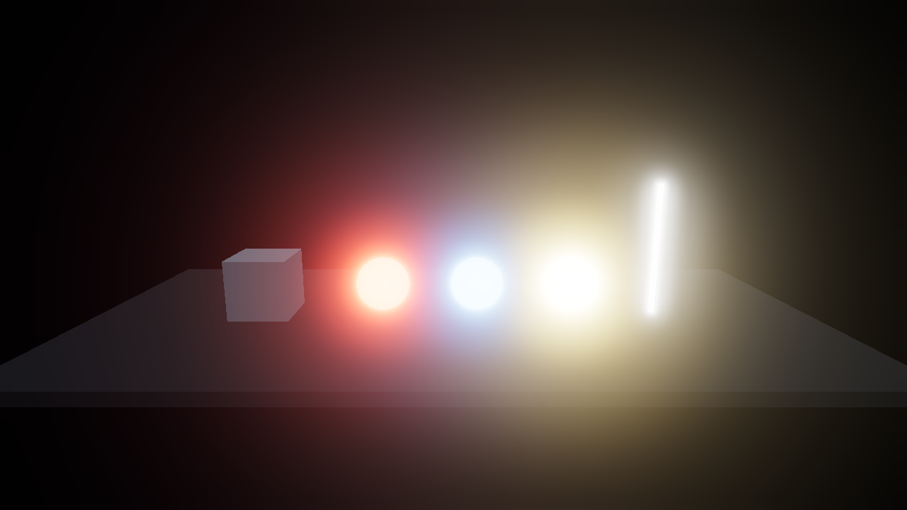
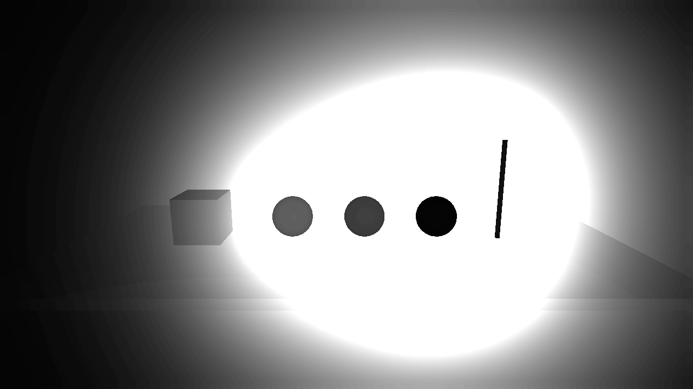
three-unreal-soft three.js UnrealBloomPass, soft glow: 100.00% of the image over 1/255, 68.82% over 16/255, mean distance 0.339 of the height
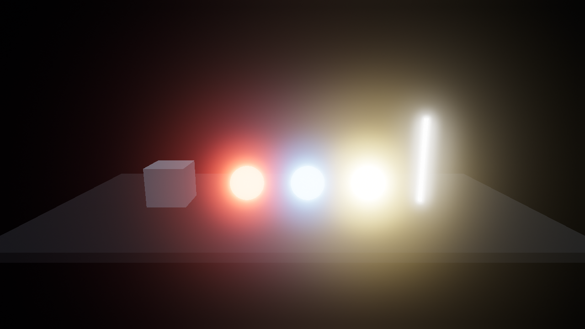
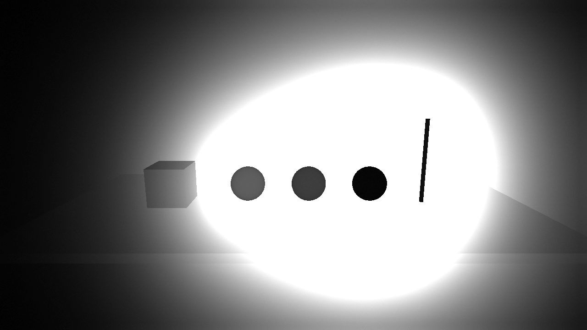
null3d-unreal-soft null3D today: UnrealBloomPass's steps glow: 98.12% of the image over 1/255, 66.90% over 16/255, mean distance 0.337 of the height against three.js: 0.00% of pixels differ by its rule, glow gap 3.45%, glow ratio 0.97
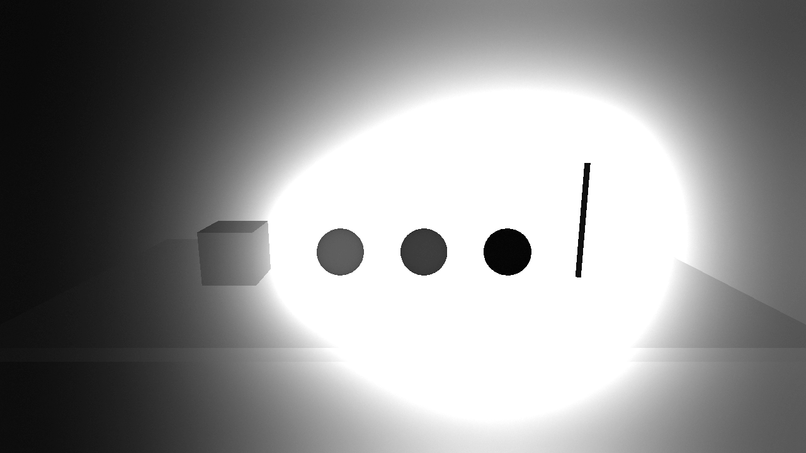
null3d-mip-soft null3D mip chain, mapped: intensity 4.40, base 360 rows, mixes 0.92 0.83 0.78 0.74 0.69 0.61 0.42, Karis on glow: 100.00% of the image over 1/255, 75.15% over 16/255, mean distance 0.357 of the height against three.js: 0.00% of pixels differ by its rule, glow gap 7.91%, glow ratio 1.02 against null3D's UnrealBloomPass steps: 0.00% of pixels
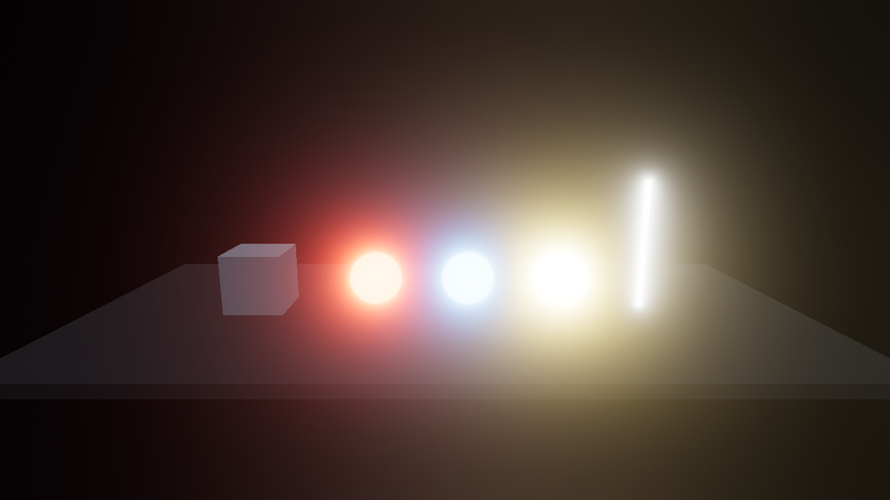
null3d-mip-soft-no-karis null3D mip chain, mapped: intensity 4.40, base 360 rows, mixes 0.92 0.83 0.78 0.74 0.69 0.61 0.42, Karis off glow: 100.00% of the image over 1/255, 75.33% over 16/255, mean distance 0.358 of the height against three.js: 0.00% of pixels differ by its rule, glow gap 7.76%, glow ratio 1.03 against null3D's UnrealBloomPass steps: 0.00% of pixels
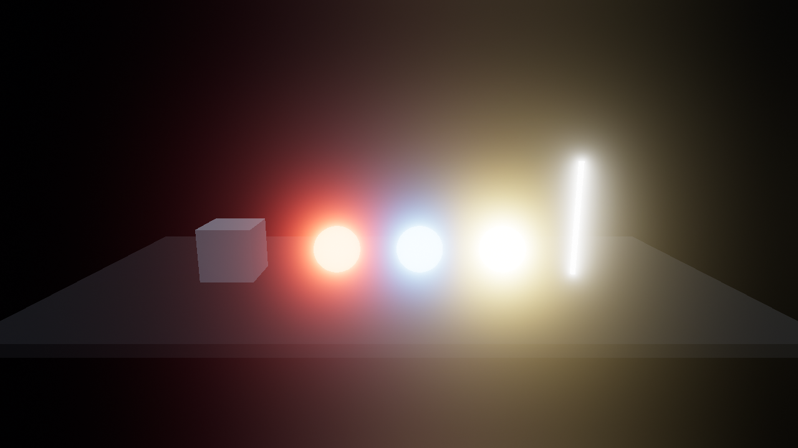
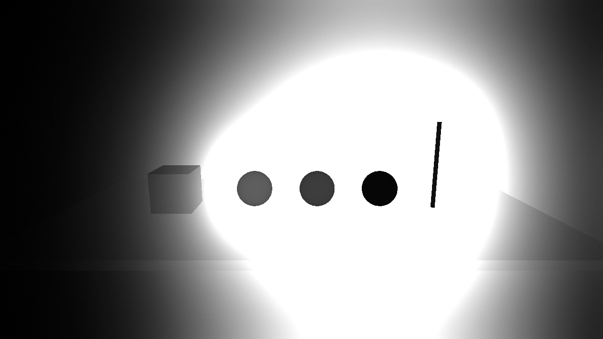
null3d-mip-soft-base-512 null3D mip chain, mapped on the default 512-row base: mixes 0.95 0.88 0.81 0.76 0.71 0.63 0.64 glow: 92.46% of the image over 1/255, 66.25% over 16/255, mean distance 0.339 of the height against three.js: 1.25% of pixels differ by its rule, glow gap 9.41%, glow ratio 1.01 against null3D's UnrealBloomPass steps: 1.82% of pixels
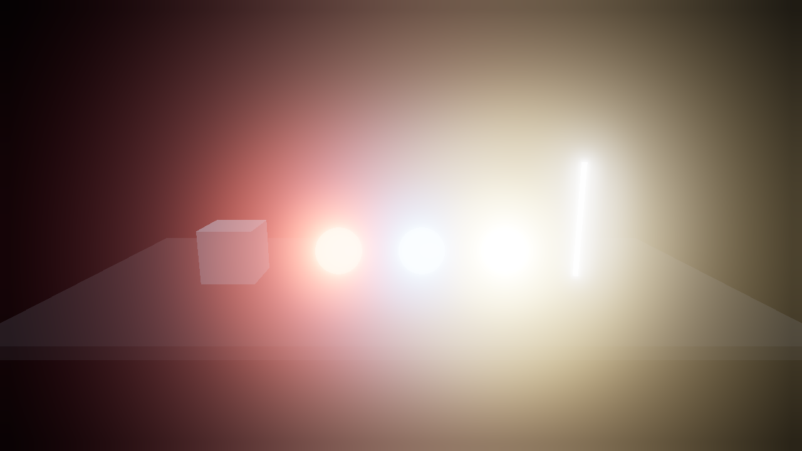
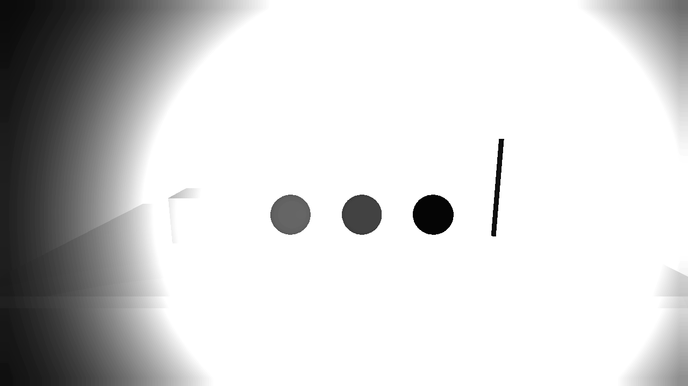
three-unreal-strong three.js UnrealBloomPass, strong glow: 100.00% of the image over 1/255, 89.84% over 16/255, mean distance 0.415 of the height
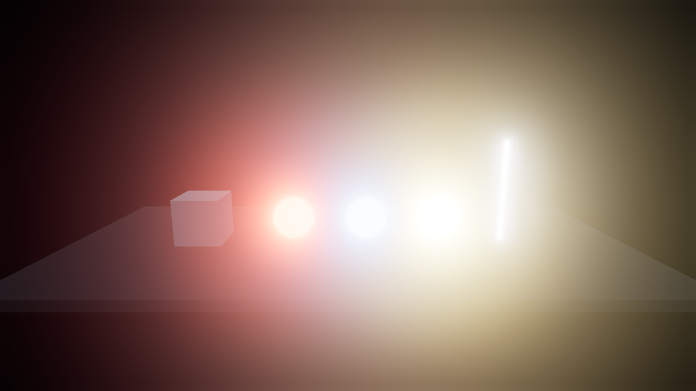
null3d-unreal-strong null3D today: UnrealBloomPass's steps glow: 100.00% of the image over 1/255, 89.09% over 16/255, mean distance 0.413 of the height against three.js: 0.00% of pixels differ by its rule, glow gap 2.73%, glow ratio 0.97null3d-mip-strong null3D mip chain, mapped: intensity 8.74, base 360 rows, mixes 0.97 0.93 0.89 0.85 0.80 0.71 0.48, Karis on glow: 100.00% of the image over 1/255, 98.40% over 16/255, mean distance 0.437 of the height against three.js: 3.73% of pixels differ by its rule, glow gap 7.88%, glow ratio 1.06 against null3D's UnrealBloomPass steps: 6.99% of pixels
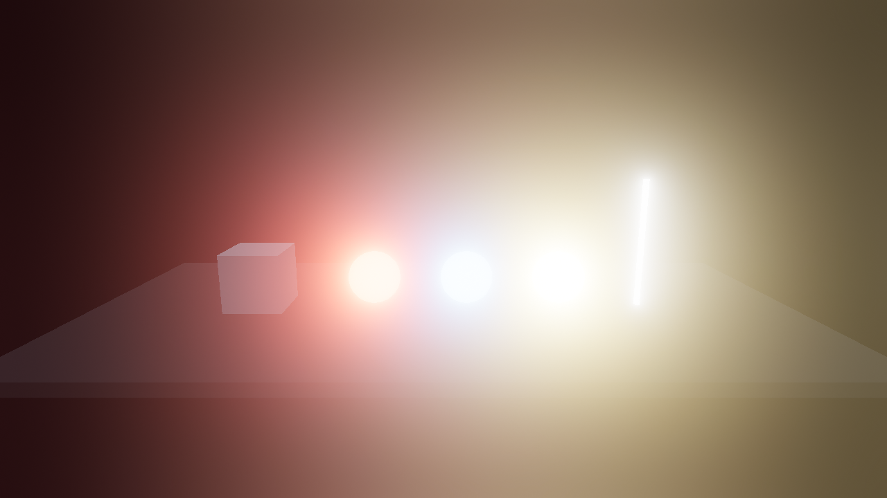
null3d-mip-strong-no-karis null3D mip chain, mapped: intensity 8.74, base 360 rows, mixes 0.97 0.93 0.89 0.85 0.80 0.71 0.48, Karis off glow: 100.00% of the image over 1/255, 98.51% over 16/255, mean distance 0.437 of the height against three.js: 4.47% of pixels differ by its rule, glow gap 8.20%, glow ratio 1.07 against null3D's UnrealBloomPass steps: 8.00% of pixels
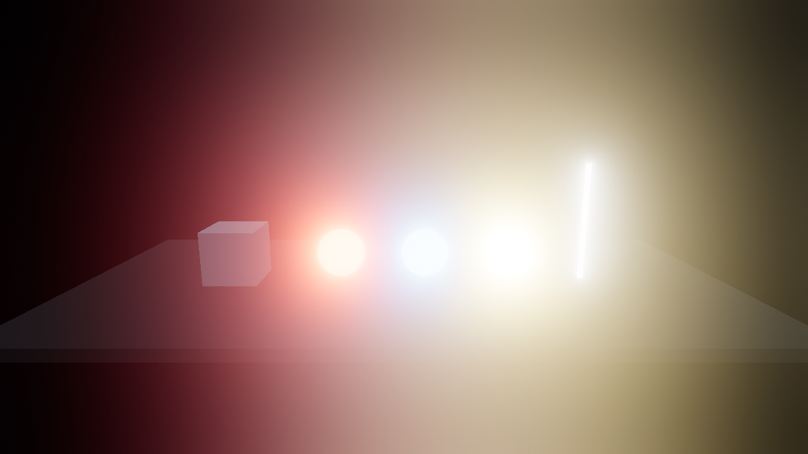
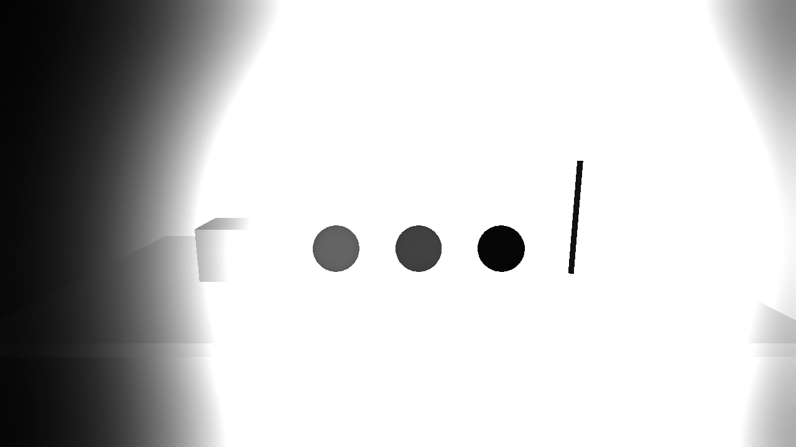
null3d-mip-strong-base-512 null3D mip chain, mapped on the default 512-row base: mixes 0.98 0.95 0.92 0.88 0.81 0.73 0.78 glow: 99.58% of the image over 1/255, 83.78% over 16/255, mean distance 0.406 of the height against three.js: 7.73% of pixels differ by its rule, glow gap 9.46%, glow ratio 1.01 against null3D's UnrealBloomPass steps: 10.50% of pixels
pmndrs
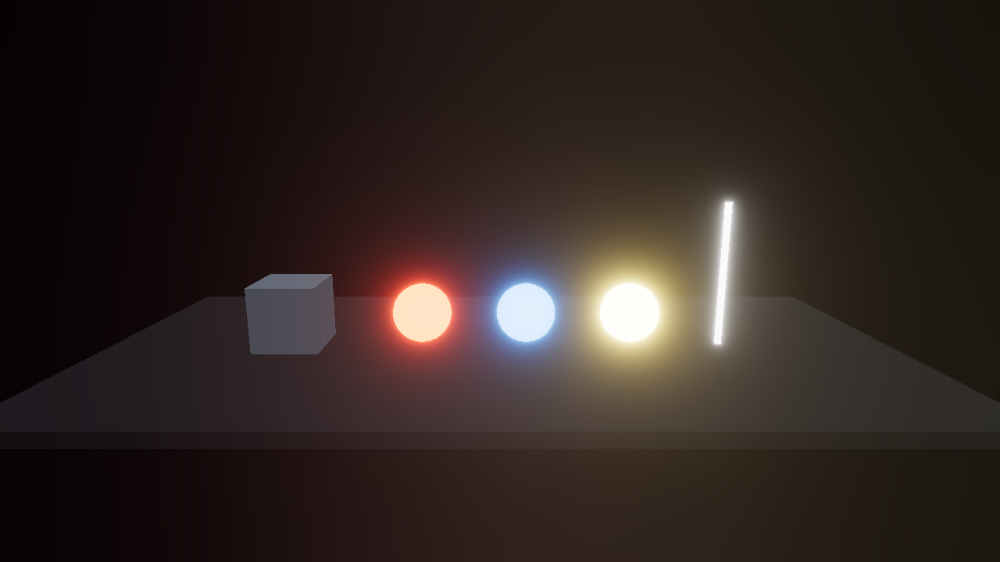
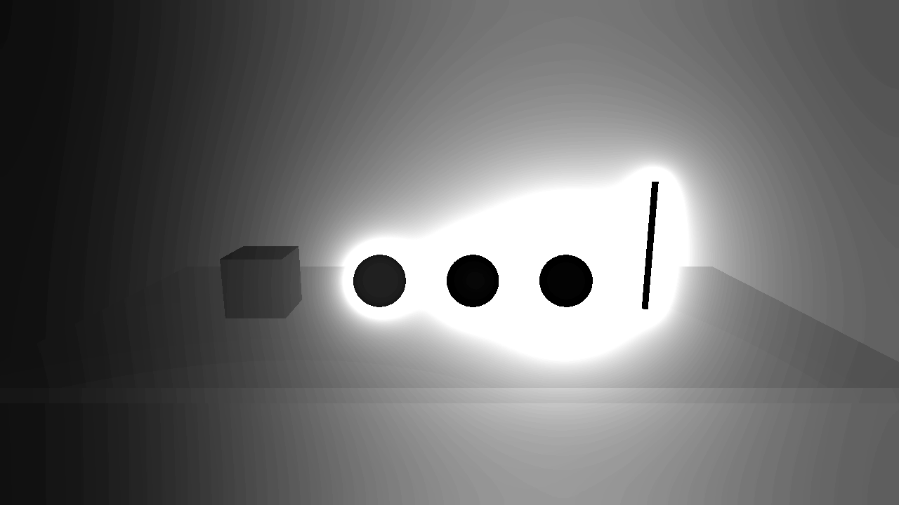
three-pmndrs-default pmndrs BloomEffect, defaults (mipmapBlur) glow: 98.92% of the image over 1/255, 71.14% over 16/255, mean distance 0.396 of the height
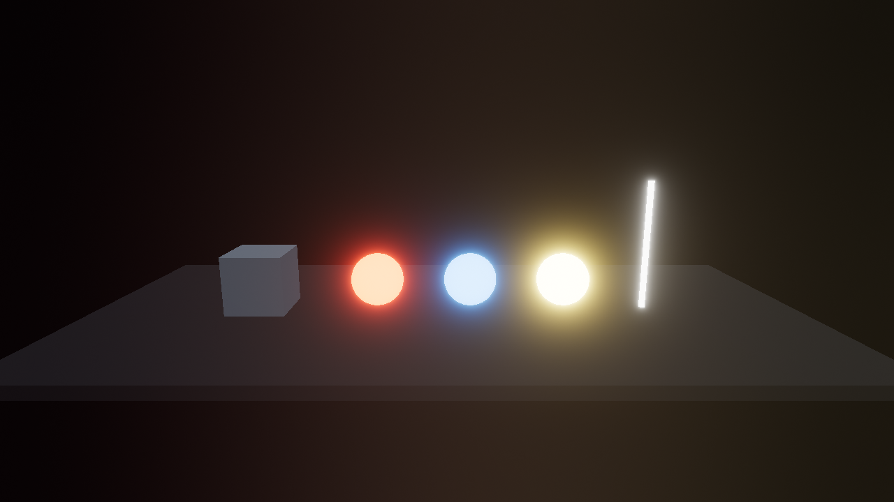
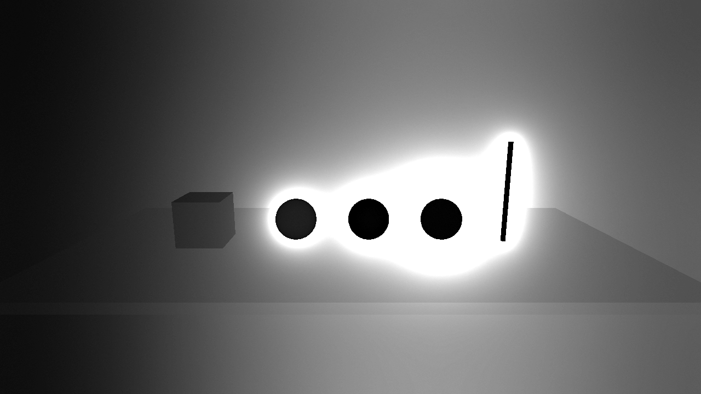
null3d-mip-pmndrs null3D mip chain, mapped: intensity 1.01, base 360, mixes 0.86 0.85 0.85 0.85 0.83 0.86 0.96, Karis on glow: 99.01% of the image over 1/255, 70.60% over 16/255, mean distance 0.400 of the height against three.js: 0.00% of pixels differ by its rule, glow gap 6.71%, glow ratio 0.94
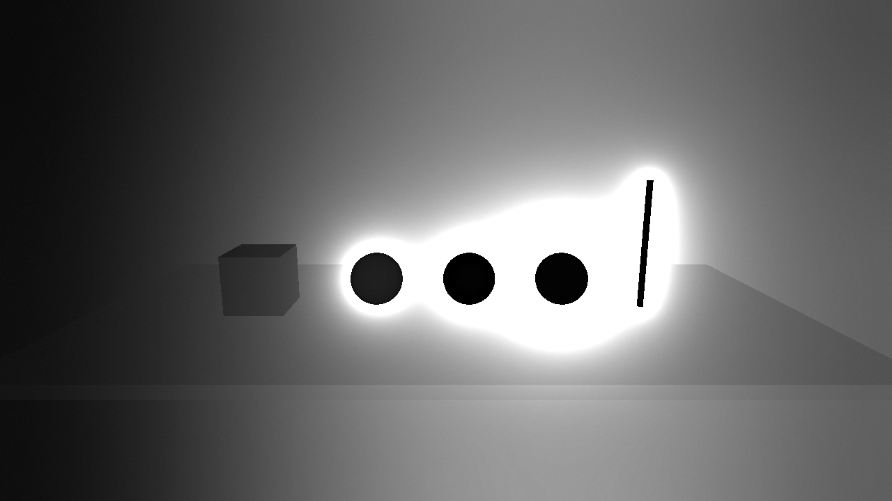
null3d-mip-pmndrs-no-karis null3D mip chain, mapped: intensity 1.01, base 360, mixes 0.86 0.85 0.85 0.85 0.83 0.86 0.96, Karis off glow: 99.02% of the image over 1/255, 70.82% over 16/255, mean distance 0.399 of the height against three.js: 0.00% of pixels differ by its rule, glow gap 5.46%, glow ratio 0.95
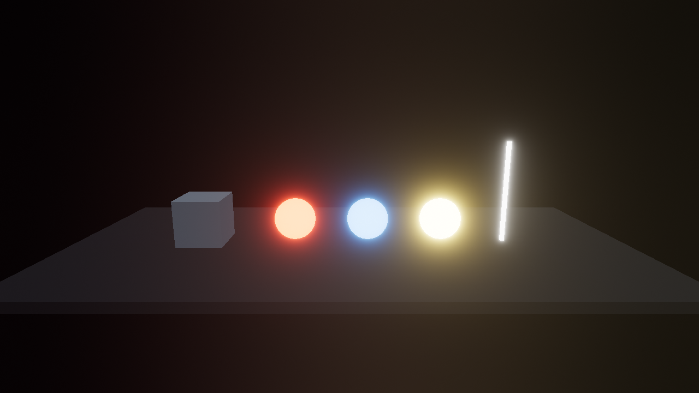
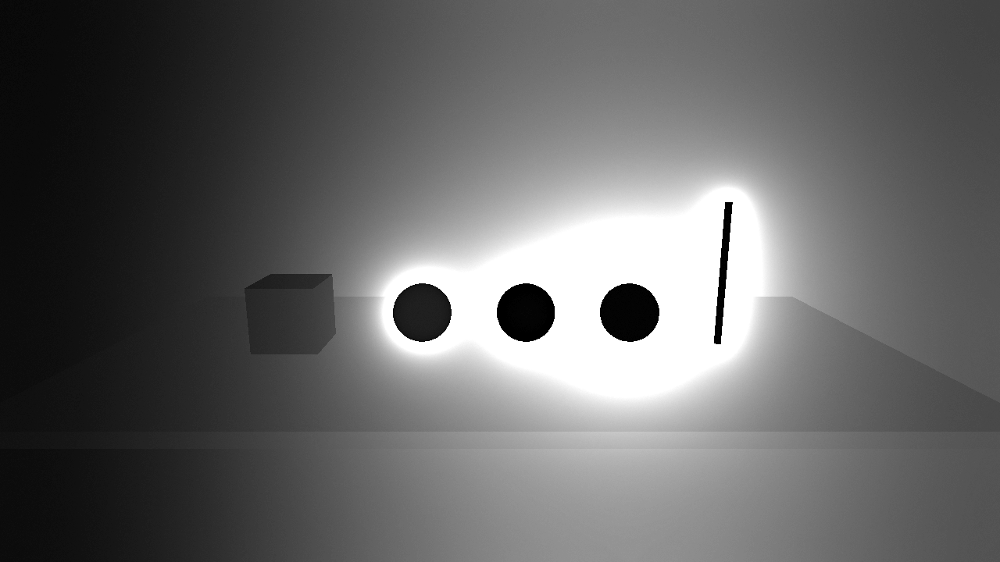
null3d-mip-pmndrs-direct null3D mip chain with pmndrs's own numbers: radius 0.85 as every mix, base at half the canvas glow: 99.03% of the image over 1/255, 69.02% over 16/255, mean distance 0.388 of the height against three.js: 0.00% of pixels differ by its rule, glow gap 7.48%, glow ratio 0.93
default
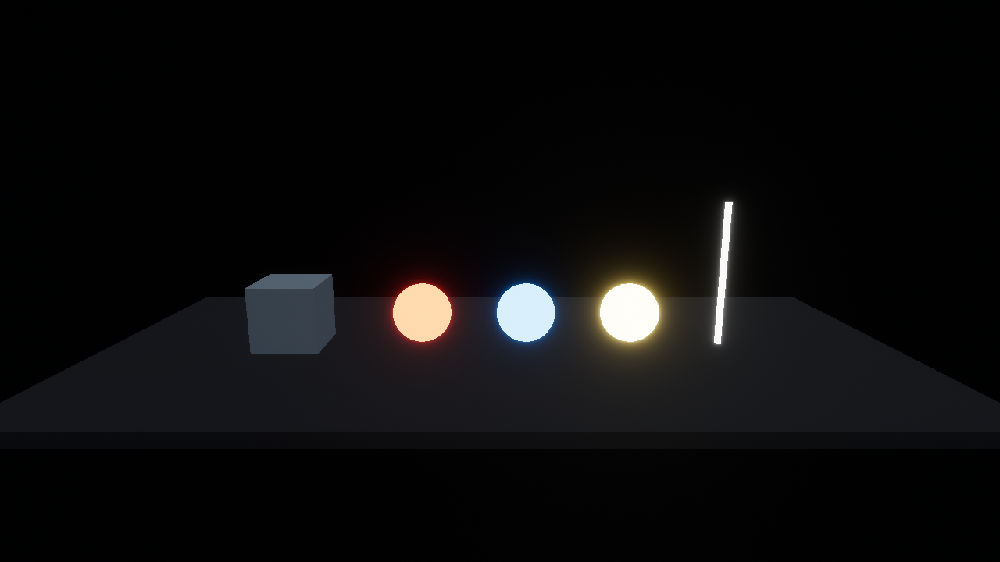
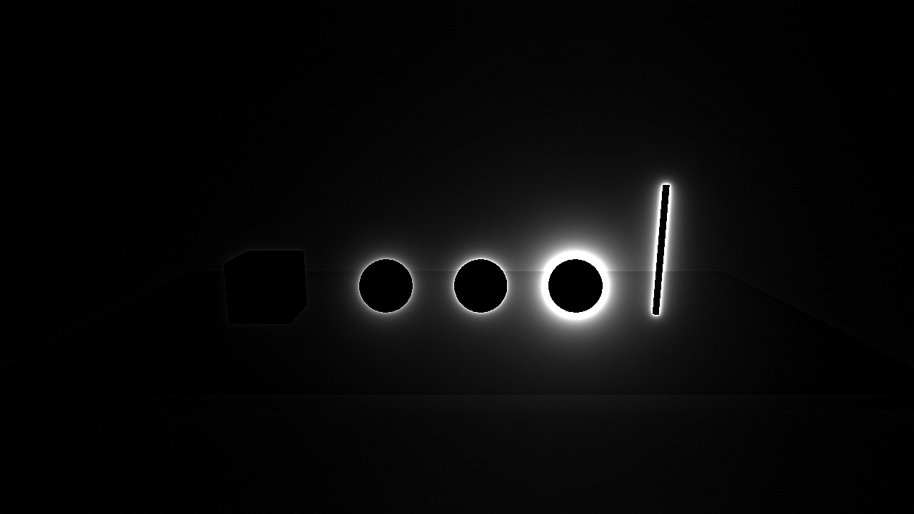
null3d-mip-default M2-F7's candidate default: threshold 0, energy-conserving mix at 0.15, Bevy NATURAL's level blend, Karis on glow: 49.78% of the image over 1/255, 3.43% over 16/255, mean distance 0.242 of the height
s4
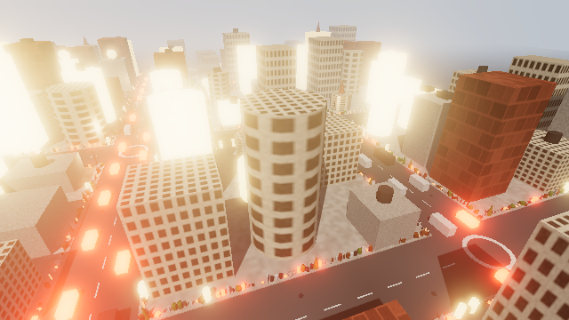
s4-three-unreal-soft S4: three.js UnrealBloomPass, soft glow: 100.00% of the image over 1/255, 88.31% over 16/255, mean distance 0.530 of the height
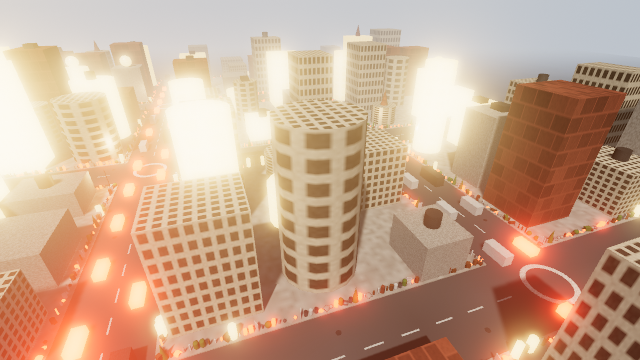
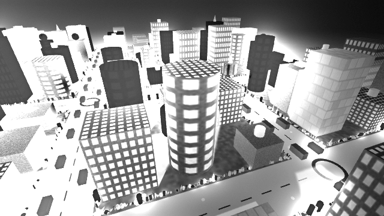
s4-null3d-unreal-soft S4: null3D today, UnrealBloomPass's steps glow: 100.00% of the image over 1/255, 86.89% over 16/255, mean distance 0.528 of the height against three.js: 0.50% of pixels differ by its rule, glow gap 8.06%, glow ratio 0.93
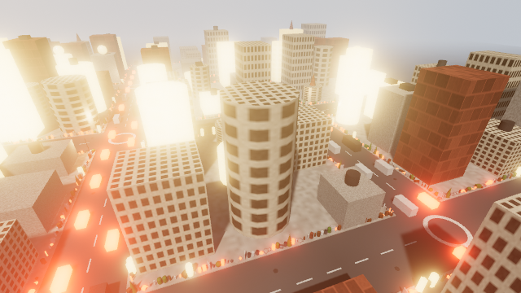
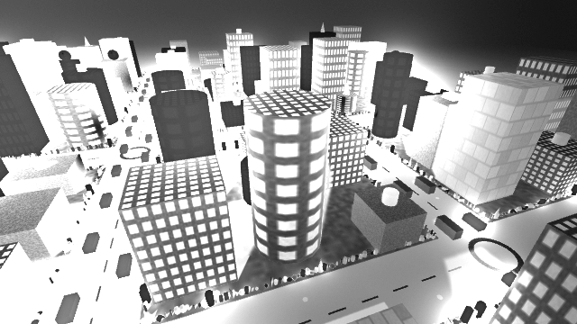
s4-null3d-mip-soft S4: null3D mip chain, mapped at 360 rows: base 180 glow: 100.00% of the image over 1/255, 89.36% over 16/255, mean distance 0.534 of the height against three.js: 0.52% of pixels differ by its rule, glow gap 9.30%, glow ratio 0.93 against null3D's UnrealBloomPass steps: 0.00% of pixels
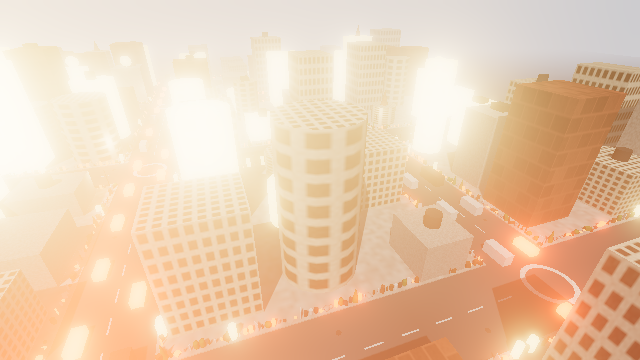
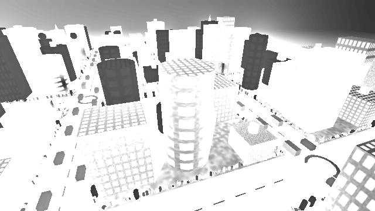
s4-three-unreal-strong S4: three.js UnrealBloomPass, strong glow: 100.00% of the image over 1/255, 98.51% over 16/255, mean distance 0.568 of the height
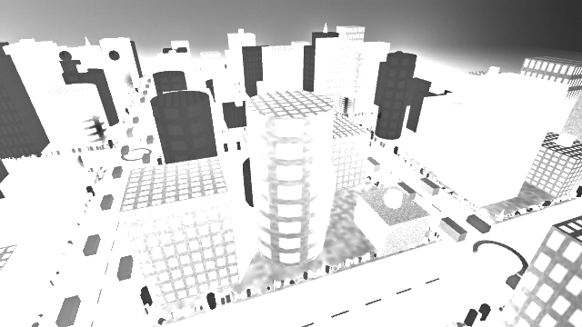
s4-null3d-unreal-strong S4: null3D today, UnrealBloomPass's steps glow: 100.00% of the image over 1/255, 98.26% over 16/255, mean distance 0.566 of the height against three.js: 0.07% of pixels differ by its rule, glow gap 5.72%, glow ratio 0.95
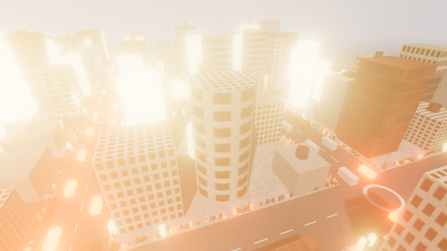
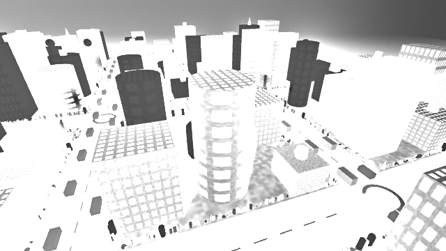
s4-null3d-mip-strong S4: null3D mip chain, mapped at 360 rows: base 180 glow: 100.00% of the image over 1/255, 99.66% over 16/255, mean distance 0.575 of the height against three.js: 0.12% of pixels differ by its rule, glow gap 5.54%, glow ratio 0.97 against null3D's UnrealBloomPass steps: 0.02% of pixels
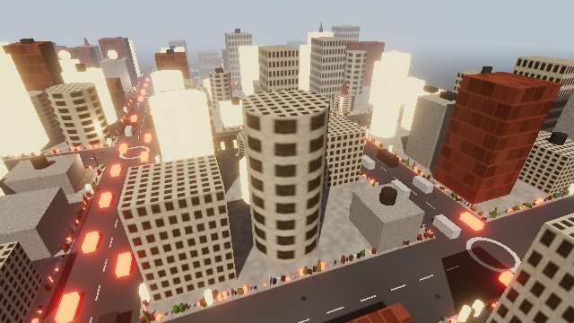
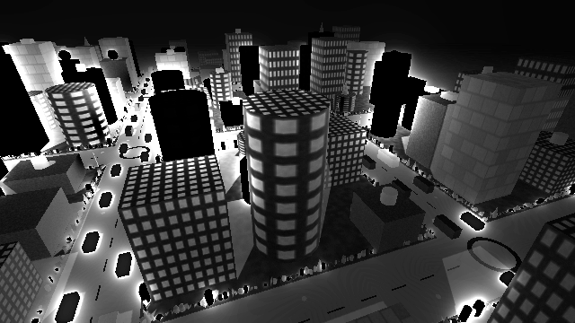
s4-three-pmndrs S4: pmndrs BloomEffect, defaults glow: 91.04% of the image over 1/255, 32.41% over 16/255, mean distance 0.799 of the height
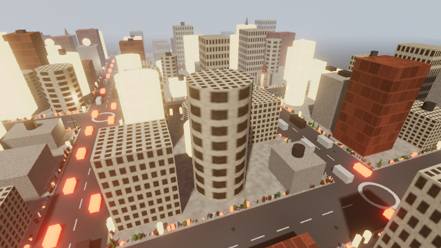
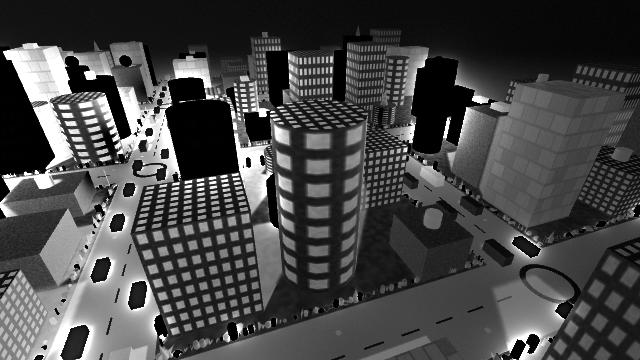
s4-null3d-mip-pmndrs S4: null3D mip chain, pmndrs mapped at 360 rows: base 180 glow: 91.31% of the image over 1/255, 45.66% over 16/255, mean distance 0.548 of the height against three.js: 2.22% of pixels differ by its rule, glow gap 27.37%, glow ratio 1.19
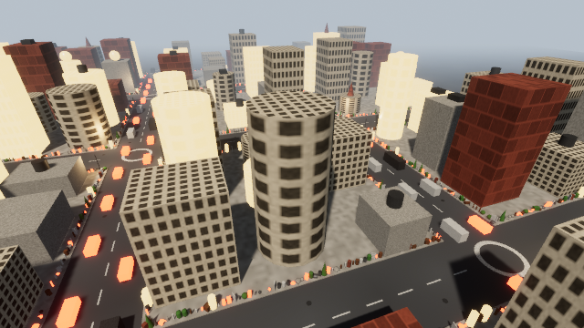
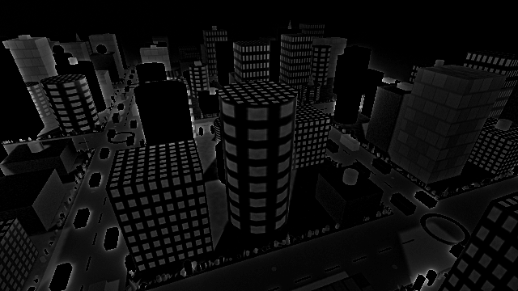
s4-null3d-mip-default S4: M2-F7's candidate default (threshold 0, mix 0.15, Bevy NATURAL levels) glow: 49.63% of the image over 1/255, 3.63% over 16/255, mean distance 0.532 of the height
size
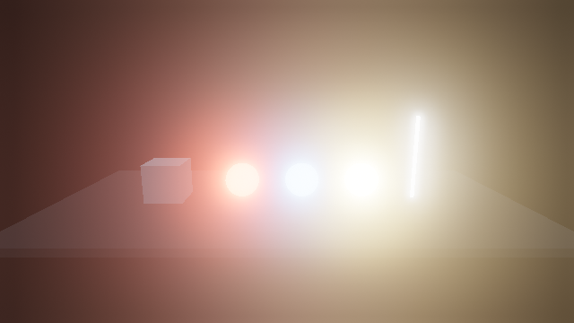
size-unreal-640 unreal, 640 x 360 glow: 100.00% of the image over 1/255, 98.87% over 16/255, mean distance 0.467 of the height
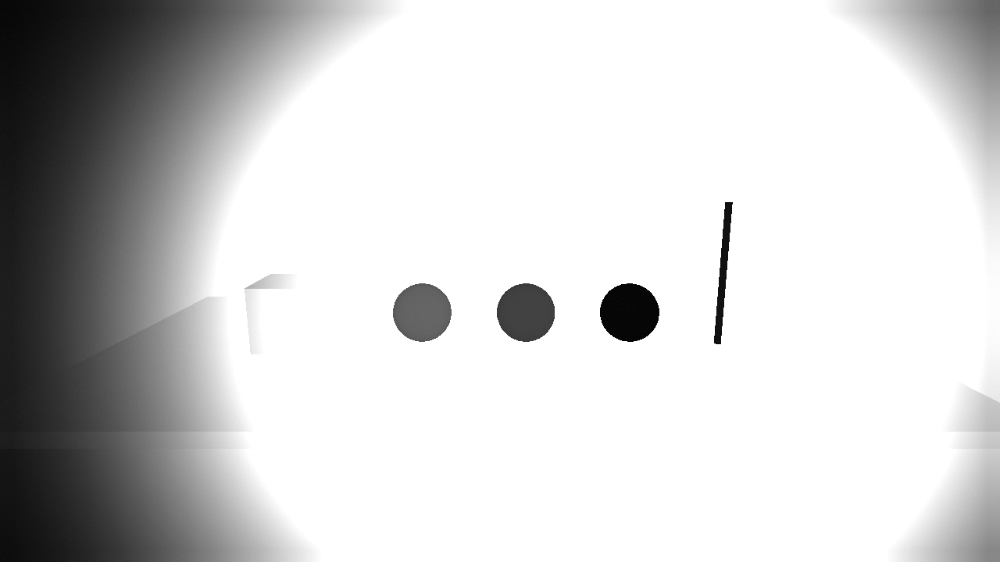
size-unreal-1280 unreal, 1280 x 720 glow: 100.00% of the image over 1/255, 89.09% over 16/255, mean distance 0.413 of the height
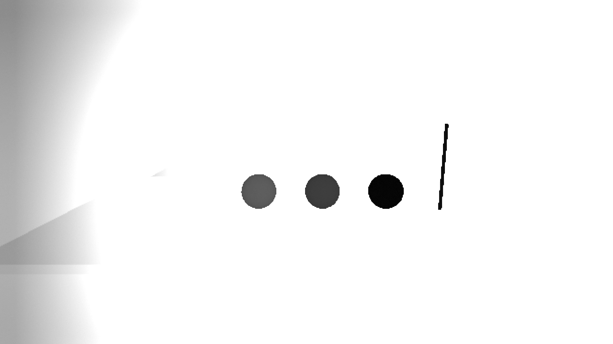
size-unreal-1280-scale-50 unreal, 1280 x 720, render scale 0.5 glow: 100.00% of the image over 1/255, 98.97% over 16/255, mean distance 0.466 of the height
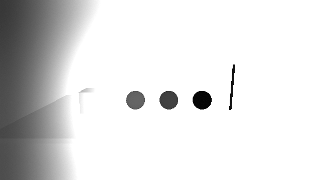
size-mip-640 mip, 640 x 360 glow: 100.00% of the image over 1/255, 98.36% over 16/255, mean distance 0.437 of the height
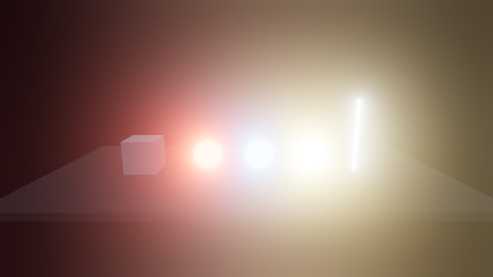
size-mip-1280 mip, 1280 x 720 glow: 100.00% of the image over 1/255, 98.40% over 16/255, mean distance 0.437 of the heightsize-mip-1280-scale-50 mip, 1280 x 720, render scale 0.5 glow: 100.00% of the image over 1/255, 98.47% over 16/255, mean distance 0.437 of the height